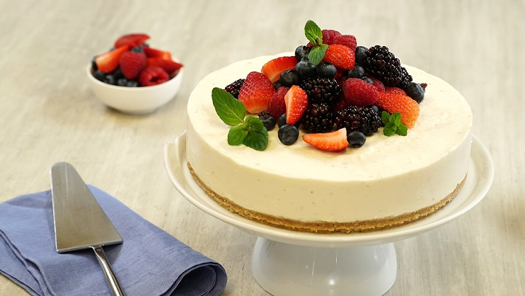

Receta de Cheesecake Clásico o New York Cheesecake, una tarta deliciosa y fresca pero además muy fácil de preparar.
Por lo general nos gusta más lo salado, pero recetas cómo este Cheesecake nos hacen querer comerlo todos los días… En esta ocasión compartimos la receta para preparar un exquisito y fresco Cheesecake clásico cubierto con una deliciosa reducción de frutos rojos!
Triturar las galletitas, colocar en un bowl junto con la manteca fundida y mezclar hasta incorporar. Colocar la mezcla en un molde desmontable (24cm), colocar papel manteca en la base y enmantecar. Esto es para facilitar el desmolde. Reservar.
Sobre una sartén a fuego medio colocar los frutos rojos, azúcar y jugo de limón. Cocinar hasta que espese (unos 15 min.), revolviendo esporádicamente.
Cubrir el Cheesecake con la reducción de frutos, porcionar y disfrutar como corresponde!!